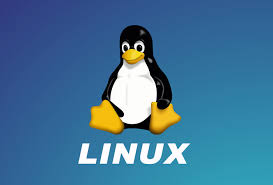

ما هو نظام لينكس؟
لينكس هو نظام تشغيل مفتوح المصدر يعتمد على Unix ويستخدم على نطاق واسع في الحواسيب الشخصية والخوادم والأجهزة المحمولة والأجهزة الذكية. يتميز لينكس بالمرونة، الأمان، والاستقرار، مما يجعله الخيار المثالي للمطورين، الشركات، وحتى المستخدمين العاديين.
تم تطوير لينكس لأول مرة في عام 1991 على يد لينوس تورفالدز، ومنذ ذلك الحين نما مجتمع كبير من المطورين والمساهمين الذين يعملون على تحسين النظام باستمرار. بفضل الطبيعة المفتوحة للينكس، يمكن لأي شخص تعديل النظام وتوزيعه بما يتناسب مع احتياجاته الخاصة.
سواء كنت تبحث عن نظام تشغيل لتطوير البرمجيات، إدارة الخوادم، أو الاستخدام اليومي، يوفر لينكس مجموعة واسعة من التوزيعات التي تلبي مختلف الاحتياجات.
مميزات لينكس
مفتوح المصدر
لينكس مفتوح المصدر، مما يعني أنه يمكنك الوصول إلى شفرة المصدر وتعديلها وفقًا لاحتياجاتك.
أمان عالي
يتميز لينكس بنظام أمان متقدم يحمي النظام من الفيروسات والتهديدات الأمنية الأخرى.
استقرار وموثوقية
لينكس معروف باستقراره وموثوقيته، مما يجعله الخيار الأمثل للخوادم والتطبيقات الحساسة.
تخصيص كامل
يمكنك تخصيص كل جزء من النظام ليناسب احتياجاتك، بدءًا من واجهة المستخدم وحتى الخدمات الخلفية.